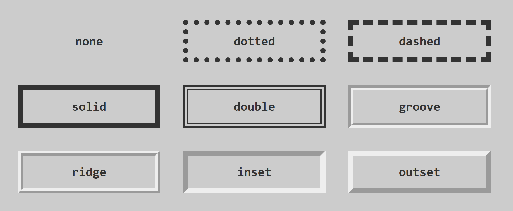

A propriedade border é uma shorthand para definir a largura, o estilo e a cor da borda de um elemento. Você pode controlar cada um desses aspectos individualmente.
border-width
Define a espessura da borda. Pode ser especificada em unidades como px, em, ou palavras-chave como thin, medium ou thick.
Exemplo:
div {
border-width: 3px;
}
.caixa-grossa {
border-width: thick;
}
border-style
Define o estilo da borda. É uma propriedade obrigatória para que a borda seja visível. Valores comuns incluem solid (linha contínua), dotted (pontilhada), dashed (tracejada), double (linha dupla), groove, ridge, inset, outset e none.
Exemplo:
p {
border-style: solid;
}
.linha-tracejada {
border-style: dashed;
}
Exemplo dos valores de bordas:

border-color
Define a cor da borda. Pode ser especificada usando nomes de cores, valores hexadecimais, RGB, RGBA, HSL ou HSLA.
Você também pode definir bordas para lados específicos:
border-top, border-right, border-bottom, border-left, border-top-width, border-top-style, border-top-color, etc.
Border Radius
A propriedade border-radius permite arredondar os cantos de um elemento, criando formas mais suaves ou até mesmo círculos e elipses. Você pode aplicar o arredondamento a todos os cantos igualmente ou a cada canto individualmente.
Controla o tamanho da imagem de fundo. Valores comuns incluem auto (tamanho original), cover (redimensiona a imagem para cobrir todo o elemento, cortando se necessário) e contain (redimensiona a imagem para caber dentro do elemento, sem cortar, mas pode deixar espaço vazio).
Define a posição inicial da imagem de fundo. Pode ser especificada usando palavras-chave (por exemplo, center, top left), porcentagens ou unidades de comprimento (px, em).
Define se e como a imagem de fundo deve ser repetida. Valores comuns incluem repeat (padrão, repete horizontal e verticalmente), repeat-x (repete apenas horizontalmente), repeat-y (repete apenas verticalmente) e no-repeat (não repete).